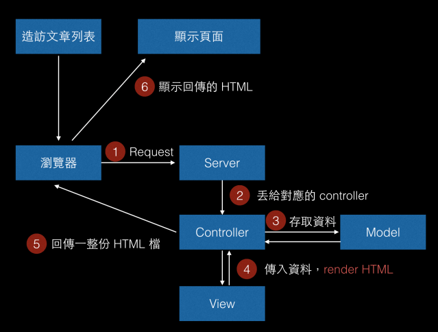
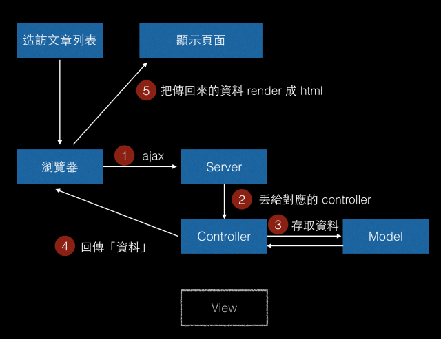

【SEO】SPA、SSR 差別
server side render

由伺服器端的 CPU 收到請求後，解析完整的 HTML 返回到使用者接收端，然後呈現網頁。
client side render

由伺服器端回傳資料，再由前端利用 Javascript 產生 HTML
我們是在執行期間「動態」去跟後端伺服器拿資料，再動態產生你看到的那些元素。
SSR(Server Side Rendering)
每一個不同頁面就回傳一份不同的 html 檔案
優點
- SEO
- 不需要先下載一堆 JS 和 CSS 後才能看到頁面（首屏加載速度快）
- 對於設備性能較弱的手機或平版，減少 client side 的電量消耗
- 我们可以将SEO的关键信息直接在后台就渲染成HTML，而保证搜索引擎的爬虫都能爬取到关键数据。
缺點
- 不論點擊什麼網頁上什麼功能，每一次都是將整個畫面重新繪製，如果在頻寬網路較差的情況下，會是一個較不好的體驗，因為要一直重新 loading 整個頁面。
- 伺服器 loading 較大
SPA(Single Page Application)
主要是運用 client side render
畫面需要變更時，會向後端發出 request，server 回傳資料以後 client 端再用 JavaScript 把畫面 render 出來，不會載入新的 HTML 檔案。
優點
- 页面之间的切换非常快，較好的使用體驗(不需重新渲染整個頁面，局部刷新）
- 一定程度上减少了后端服务器的压力（不用管页面逻辑和渲染）
- 后端程序只需要提供API，完全不用管客户端到底是Web界面还是手机等
缺點
- 首屏打开速度很慢，因为用户首次加载需要先下载SPA框架及应用程序的代码(JS)，然后瀏覽器再渲染页面。
- 不利于SEO，打開網頁原始碼觀看會是空的，因為 html 都是由 Javascript 生成(不過目前 Google 也可以爬 JS 生成完後的 html)
混合 SSR + SPA
第一個頁面由Server side render，之後的操作還是由Client side render，就可以保證搜尋引擎也能爬到完整的 HTML。
- Post title：【SEO】SPA、SSR 差別
- Post author：Neil Yang
- Create time：2019-06-29 00:00:00
- Post link：https://des86532.github.io/2019/06/29/SEO/spa-and-ssr/
- Copyright Notice：All articles in this blog are licensed under BY-NC-SA unless stating additionally.